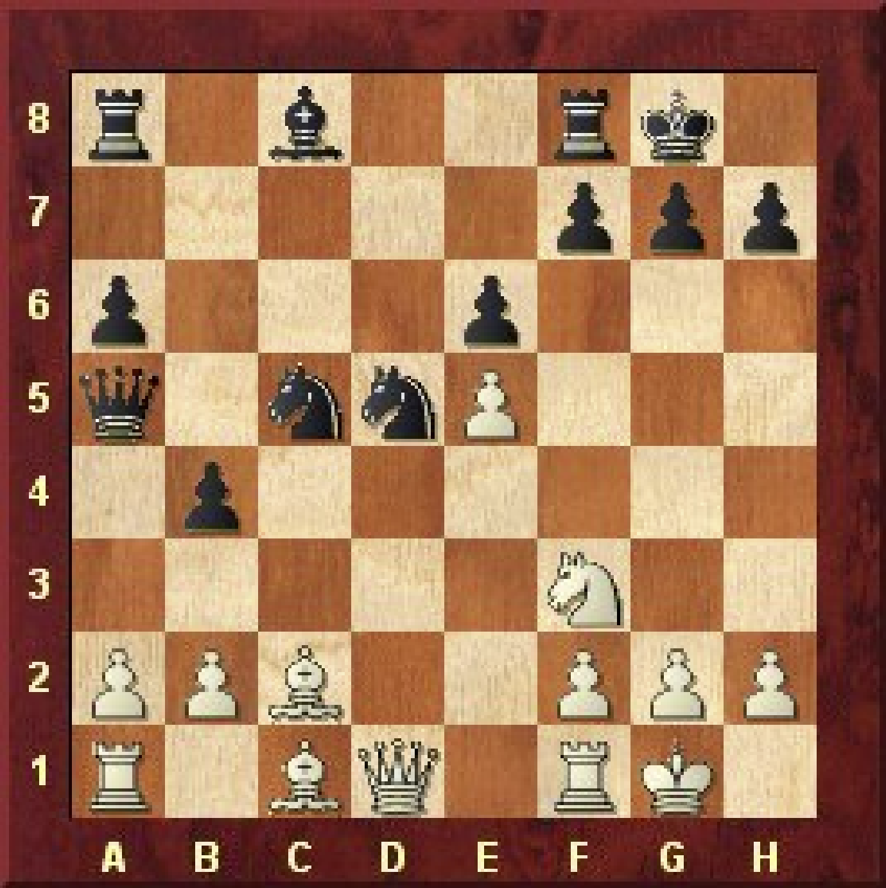

Η κλασσική θυσία Αξιωματικού
Eπίθεση στο ροκέ Μέρος 1ο – Η κλασσική θυσία του Αξιωματικού
Όταν ο αντίπαλος βασιλιάς έχει κάνει ροκέ και θέλουμε να του επιτεθούμε στόχος μας είναι να αδυνατίσουμε την άμυνα του.
Αυτό μπορεί να γίνει είτε απομακρύνοντας τα κομμάτια που τον υποστηρίζουν είτε δημιουργώντας αδυναμίες στα πιόνια που τον
προστατεύουν ακόμα και με θυσίες για να ανοίξουμε γραμμές για τα κομμάτια μας.
Θα μελετήσουμε τους παρακάτω τυποποιημένους τρόπους επίθεσης στον αντίπαλο βασιλιά:
Κλασσική θυσία του αξιωματικού
Διπλή θυσία των αξιωματικών
Η κλασσική θυσία του αξιωματικού γίνεται θυσιάζοντας τον αξιωματικό στο h7 (ή στο h2 για το μαύρο) με σκοπό να έρθει ο
ίππος στο g5 με σαχ και η βασίλισσα στο h5 μέσω τις διαγωνίου d1-h5 δημιουργώντας άμεσες απειλές ματ. Βασική προϋπόθεση
για να μπορέσει να γίνει η επίθεση είναι να λείπει ο ίππος από το f6.
Στο πρώτο απλό παράδειγμα ο λευκός κάνει λάθη στο άνοιγμα που επιτρέπει την
πραγματοποίηση της κλασσικής θυσίας του αξιωματικού και χάνει σε μινιατούρα.
Buthali,Dabilani - Figueroa,C
[D52]
Novi Sad ol (Men) Novi Sad (14), 1990
1.Nf3 Nf6 2.d4 d5 3.c4 e6 4.Bg5 Nbd7 5.e3 c6 6.Nc3 Bb4
Η συνηθισμένη σειρά κινήσεων που ακολουθεί ο μαύρος για να μπει στη βαριάντα
Cambridge-Springs είναι 6...Qa5 7.Nd2 Bb4 8.Qc2 0–0. Παίζεται και 6...Be7.
7.Bd3?!
Έπρεπε να παίξει 7.Qc2.
7...Qa5 8.Qc2?
Ο λευκός δεν αντιλαμβάνεται τις παγίδες που κρύβει η θέση. Έπρεπε 8.0–0 Bxc3
9.bxc3 Qxc3 10.Rc1 Qa5 11.Qc2 και ο λευκός έχει αντάλλαγμα για το πιόνι.
8...Ne4 9.Bxe4 dxe4 10.Nd2??
Στήνει κομμάτι. Καλύτερη είναι η συνέχεια 10.Ne5 Nxe5 11.dxe5 Qxe5
12.Bf4 Bxc3+ 13.bxc3 Qf5 με μεγάλη όμως και πάλι υπεροχή του μαύρου.
10...Qxg5 11.0–0 f5 12.Ne2 Bd6 13.Rad1 Nf6 14.c5??
Λάθος που επιτρέπει την θυσία του αξιωματικού. Έπρεπε να παίξει 14.Rfe1 για να μπορεί να έρθει ο ίππος στην άμυνα από το f1.

Bxh2+! 15.Kxh2 Qh4+
Κέρδιζε εύκολα και το Ng4 αλλά η κίνηση της παρτίδας είναι καλύτερη γιατί δεν αφήνει άλλες δυνατότητες στο λευκό
16.Kg1 Ng4 17.Rfe1 Qxf2+ 18.Kh1 Nxe3
0-1
Στην επόμενη παρτίδα ο πρώην παγκόσμιος πρωταθλητής Garry Kasparov κερδίζει εύκολα έναν υπολογιστή.
Kasparov,Garry (2780) - Comp Fritz 2
[B15]
Cologne m 5' Cologne, 1992
1.e4 c6 2.Nc3 e6 3.d4 d5 4.e5 Nd7 5.f4 Bb4 6.Nf3 Ne7 7.a3 Bxc3+ 8.bxc3 0–0?
8...c5 9.Be2 Qa5
9.Bd3 b6?
Τραγικό λάθος, το οποίο επιτρέπει την πραγματοποίηση της θυσίας.9...Nf5 10.g4 Nh4
οδηγεί σε αλλαγή ελαφρών που συμφέρει το μαύρο επειδή έχει λιγότερο χώρο
10.Bxh7+ Kxh7 11.Ng5+ Kg6
Έχαναν επίσης και οι άλλες δύο θεματικές απαντήσεις του μαύρου 11...Kg8 12.Qh5 Re8 13.Qxf7+
Kh8 14.Nxe6+-; 11...Kh6 12.Qd3 Nf6 (12...f5 13.Qh3+ Kg6 14.Qh7 ματ) 13.exf6+-.
12.Qg4 Nxe5 13.fxe5 f5 14.Qg3 f4 15.Qg4 Kh6 16.Bxf4 Rxf4 17.Qxf4
Ο λευκός έχει μεγάλη υλική υπεροχή και οι υπόλοιπες κινήσεις έχουν διαδικαστικό χαρακτήρα.
Ng6 18.Nf7+ Kh7 19.Qg3 Qh4 20.Qxh4+ Nxh4 21.0–0 Nf5 22.Nd6 Ba6 23.Rxf5! exf5 24.e6 Be2 25.Re1 Bh5 26.e7 Be8
27.Nxf5 g6 28.Nd6 Kg7 29.h4 Kf6 30.g4 Rb8 31.Kf2 a5 32.Kg3 a4 33.g5+ Kg7 34.h5 gxh5 35.Kh4 b5 36.Nxe8+ Rxe8 37.Kxh5 Kf7
38.Kg4 Rxe7 39.Rxe7+ Kxe7 40.Kf5 Kf7 41.Ke5 Kg6 42.Kd6 Kxg5 43.Kxc6 Kf4 44.Kxd5 Kf5 45.Kc6 Kf4 46.d5 Ke3
1–0
Budnikov,Oleg (2296) - Onikienkoo,Vitaly (2235)
[D48]
UKR ol Alushta, 1999
1.d4 d5 2.c4 c6 3.Nc3 Nf6 4.e3 e6 5.Nf3 Nbd7 6.Bd3 dxc4 7.Bxc4 b5 8.Bd3 a6
Η άλλη κύρια συνέχεια της Meran είναι 8...Bb7 9.0–0 a6 10.e4 c5 11.d5] 9.e4 b4?! [Η κύρια βαριάντα είναι 9...c5 10.e5 cxd4 11.Nxb5 με πολλές περιπλοκές.
10.Na4 c5 11.e5 Nd5 12.dxc5 Bxc5 13.Nxc5 Nxc5 14.Bc2 Qa5 15.0–0 0–0??
Ο μαύρος βασιλιάς μετακινείται σε πτέρυγα που δεν υπάρχει κανένα κομμάτι να τον υποστηρίξει.
Έπρεπε να ολοκληρώσει την ανάπτυξη στην πτέρυγα της βασίλισσας με 15...Bb7 16.Re1 Rd8.
16.Bxh7+! Kxh7 17.Ng5+ Kg6
Χάνουν επίσης οι συνέχειες 17...Kg8 18.Qh5 Rd8 19.Qxf7+ Kh8 20.Qh5+ Kg8 21.Qh7+ Kf8
22.Qh8+ Ke7 23.Qxg7+ Ke8 24.Qf7 ματ; 17...Kh6 18.Qg4+-.
18.Qg4 f6
Αν 18...f5 19.Qh4 Nf6 20.exf6 Kxf6 21.Ne4+ Kg6 22.Qg5+ Kf7 23.Qh5+ Kg8 24.Ng5 και ο λευκός κερδίζει.
19.Nxe6+ Kf7 20.Qxg7+ Kxe6 21.Qxf8+-
Ο μαύρος βασιλιάς αναγκάστηκε να βγει προς το κέντρο της σκακιέρας όπου θα δεχτεί επίθεση από όλα τα λευκά κομμάτια.
fxe5 22.Be3 Ne4 23.Qg8+ Kd6 24.Qg6+ Nef6 25.Rad1 Ke6 26.Bg5 Bb7
27.Rxd5 Qxd5 28.Qxf6+ Kd7 29.Qe7+ Kc8 30.Rc1+ Bc6 31.f3 Rb8 32.h4 Rb7 33.Rxc6+
1–0
Στο τελευταίο παράδειγμα που ακολουθεί η κλασσική θυσία του αξιωματικού οδηγεί και πάλι σε γρήγορο ματ
παρά το γεγονός ότι υπάρχει ο Be7 που σε πολλές περιπτώσεις κρατάει την θυσία όταν δεν υπάρχει ο Nf6.
Schallopp,Emil - Gossip,George Hatfeild
[C29]
Manchester Manchester, 1900
1.e4 e5 2.Nc3 Nf6 3.f4 d5 4.fxe5 Nxe4 5.Nf3 Nxc3?!
Οι κύριες συνέχειες της Βιεννέζικης είναι 5...Be7 6.Qe2 Nxc3 7.dxc3 0–0
8.Bf4 c5 9.0–0–0 και 5...Bg4 6.Qe2 Nxc3 7.dxc3 Nc6 8.Bf4 Qd7 9.0–0–0.
6.bxc3 Be7 7.d4 0–0 8.Bd3 Bg4 9.Rb1 b6? 10.0–0 c5 11.h3 Bh5??
Επιτρέπει την θυσία. Έπρεπε να παίξει 11...Be6 12.Qe1 c4 13.Be2 Nc6 με ισορροπημένη θέση.
12.Bxh7+! Kxh7 13.Ng5+ Bxg5
Χάνουν και οι συνέχειες 13...Kg8 14.Qxh5 Bxg5 15.Bxg5 Qe8 16.Bf6!+- gxf6 17.Qg4+ Kh8
18.Rf5+- και 13...Kg6 14.Qd3+ f5 15.exf6+ Kh6 16.Qh7ματ.
14.Qxh5+ Bh6
Αν 14...Kg8 15.Bxg5 Qc7 16.Bf6! Rc8 (16...gxf6 17.exf6 Qg3 18.Rf5; 16...Nd7 17.Qg5 Nxf6 18.exf6 g6
19.Qh6) 17.Qg5 Kf8 18.Qxg7+ Ke8 19.Qg8+ Kd7 20.Qxf7+ Kc6 21.Qe6+ Kb7 22.Qxd5 με κερδισμένη θέση.
15.Bxh6 gxh6 16.Rf6 Kg7 17.Qxh6+ Kg8 18.Qg5+ Kh7 19.Rh6 ματ
1–0
Η διπλή θυσία των αξιωματικών
Επίθεση στο ροκέ Μέρος 2ο - Η διπλή θυσία των αξιωματικών.
Όταν ο αντίπαλος βασιλιάς έχει κάνει ροκέ μια ακόμα τυποποιημένη μορφή επίθεσης είναι η διπλή θυσία των αξιωματικών.
Η ιδέα της επίθεσης αυτής είναι η διάλυση της άμυνας του βασιλιά με διαδοχικές θυσίες των αξιωματικών στα
τετράγωνα h7,g7 (αντίστοιχα στα τετράγωνα h2,g2 για τα μαύρα) δίνοντας έτσι την δυνατότητα στα βαριά κομμάτια
να επιτεθούν από τις ανοιχτές γραμμές που έχουν δημιουργηθεί. Για να μπορέσει να εφαρμοστεί αποτελεσματικά
η επίθεση θα πρέπει να λείπει ο μαύρος ίππος από το f6, να υπάρχουν αξιωματικοί στις ανοιχτές διαγώνιους b1-h7 και a1-g7
καθώς και να μπορούν εύκολα να περάσουν στην επίθεση τα βαριά κομμάτια.
Τη διπλή θυσία των αξιωματικών την εφάρμοσε πρώτος ο δεύτερος παγκόσμιος πρωταθλητής στην ιστορία
του σκακιού Emanuel Lasker στην ακόλουθη διάσημη και διδακτική παρτίδα.
Lasker,Emanuel - Bauer,Johann Hermann
[A03]
Amsterdam Amsterdam (1), 1889
1.f4 d5 2.e3 Nf6 3.b3 e6 4.Bb2 Be7 5.Bd3 b6 6.Nf3 Bb7 7.Nc3 Nbd7 8.0–0 0–0
9.Ne2 c5 10.Ng3 Qc7 11.Ne5 Nxe5 12.Bxe5 Qc6 13.Qe2 a6?
Χάνει χρόνο. Έπρεπε να παίξει g6 για να μην επιτρέψει την αλλαγή του ίππου.
14.Nh5 Nxh5
Αν 14...d4 15.Nxg7 Kxg7 16.Qg4+ Kh8 17.Qg5 Rg8 18.Bxf6+ Bxf6 19.Qxf6+ Rg7 20.e4 με υπεροχή για τα λευκά.
15.Bxh7+! 15...Kxh7 16.Qxh5+ Kg8 17.Bxg7!!
Δεύτερη θυσία αξιωματικού για να ανοίξουν γραμμές για τη βασίλισσα και τον πύργο που θα έρθει μέσω της 3ης γραμμής.
Kxg7 18.Qg4+ Kh7 19.Rf3 e5 20.Rh3+ Qh6 21.Rxh6+ Kxh6 22.Qd7!
Κίνηση που κερδίζει κομμάτι και έπρεπε να είχε μετρηθεί από τον Lasker πριν πραγματοποιήσει τη θυσία.
22...Bf6 23.Qxb7 Kg7 24.Rf1 Rab8 25.Qd7 Rfd8 26.Qg4+ Kf8 27.fxe5 Bg7 28.e6 Rb7 29.Qg6 f6 30.Rxf6+ Bxf6
31.Qxf6+ Ke8 32.Qh8+ Ke7 33.Qg7+ Kxe6 34.Qxb7 Rd6 35.Qxa6 d4 36.exd4 cxd4 37.h4 d3 38.Qxd3 1–0
Gaudin,R - Oskam,Gerard
[B21]
Bromley Bromley, 1920
1.e4 c5 2.d4 cxd4 3.Nf3 Qa5+ 4.Bd2 Qb6 5.Na3 Nc6 6.Nc4 Qc7 7.c3 b5 8.Na3 dxc3 9.bxc3 a6 10.Bd3 Nf6 11.0–0 e6
12.Nc2 d5 13.exd5 exd5 14.a4 bxa4 15.Rxa4 Be7 16.Bf4 Qb7 17.Ne5 0–0 18.Re1 Bd6 19.Nxc6 Qxc6 20.Nd4 Qb6 21.Bg5 Bd7 22.Bxf6 Bxa4
Το άνοιγμα έχει παιχτεί ανορθόδοξα αλλά με μεγάλη ευρηματικότητα και από τους δύο παίχτες.
Ο λευκός μπορεί να επιλέξει συνέχεια που θα έχει δύο κομμάτια για πύργο και δύο πιόνια με ασαφή θέση,
αλλά επιλέγει τη διπλή θυσία αξιωματικών. Με σωστό παιχνίδι ο λευκός θα ήταν υποχρεωμένος να κάνει
τριπλή επανάληψη όμως ο μαύρος κάνει λάθος και χάνει αμέσως την παρτίδα.
23.Bxh7+
Η άλλη επιλογή ήταν 23.Qxa4 Bxh2+ (23...gxf6? 24.Qd7+-) 24.Kxh2 Qxf6 25.Kg1 g6 με ασάφεια
23...Kxh7 24.Qh5+ Kg8 25.Bxg7 Bxh2+??
Η συνέχεια 25...Kxg7 26.Nf5+ Kf6 27.Ne7 Kg7 (27...Bxe7 28.Qh6+ Kf5 29.Qxb6+-) 28.Nf5+ οδηγεί σε τριπλή επανάληψη.
26.Kxh2 Kxg7 27.Nf5+ Kf6 28.Qh6+ Kxf5 29.Qxb6 Bb5 30.Re3 f6 31.Qe6+ 1–0
Dizdarevic,Emir (2425) - Miles,Anthony J (2570)
[E14]
Biel MTO op Biel, 1985
1.c4 b6 2.d4 e6 3.Nf3 Nf6 4.e3 Bb7 5.Bd3 d5 6.b3 Bd6 7.0–0 0–0 8.Bb2 Nbd7 9.Nbd2 Ne4 10.Qc2 f5
Η θέση φαίνεται απλή αλλά θέλει προσοχή από το λευκό γιατί τα κομμάτια του
μαύρου μπορούν εύκολα να συντονιστούν σε επίθεση στην πτέρυγα του βασιλιά.
11.Rad1?
Έπρεπε 11.cxd5 exd5 12.Ne5 Qe7 13.f4 με ισότητα.
11...Nxd2 12.Nxd2 dxc4 13.Nxc4?!
Καλύτερη είναι η συνέχεια 13.Bxc4 Bxh2+ 14.Kxh2 Qh4+ 15.Kg1 Bxg2 16.Bxe6+ Kh8 17.f3 Bh3 18.Ne4 Bxf1
19.Bxd7 (19.Rxf1 fxe4 20.Bxd7 Rxf3 21.Rxf3 exf3-+) 19...fxe4 20.Qxe4 Qxe4 21.fxe4 Rad8 22.Bg4 Bb5 με υπεροχή για τα μαύρα.
13...Bxh2+! 14.Kxh2 Qh4+ 15.Kg1 Bf3!
15...Bxg2 16.f3 Bxf1 17.Bxf1 Rf6 18.Bg2.
16.Nd2
Χάνουν και οι βαριάντες 16.Rfe1 Rf6 17.gxf3 Qh3! και ακολουθεί ματ, 16.Ne5 Nxe5 17.dxe5 Qg4 18.g3 Qh3 με ματ στην επόμενη κίνηση.
16...Bxg2! 17.f3
17.Kxg2 Qg4+ 18.Kh2 Rf6 και η είσοδος του πύργου τελειώνει την παρτίδα.
17...Rf6 18.Nc4 Bh3 0–1
Φινάλε Πύργων : Βασικές Θέσεις
Τα πιο συνηθισμένα φινάλε που προκύπτουν σε παρτίδες είναι τα φινάλε πύργων. Γενικώς θεωρούνται δύσκολα και πολύπλοκα για να
τα κατανοήσει κάποιος. Για να μπορέσει ένας σκακιστής να χειριστεί σωστά ένα φινάλε πύργων χρειάζεται να γνωρίζει κάποιες βασικές θέσεις.
Με γνώση βασικών θέσεων θα μπορεί να αντιμετωπίσει και περισσότερο πολύπλοκες θέσεις. Θα μελετήσουμε τρία βασικά φινάλε με
πύργο και πιόνι έναντι πύργου: τη θέση του Lucena, τη θέση του Philidor και τη θέση του Vancura.
Τα λευκά κερδίζουν ανεξάρτητα από το ποιος έχει την κίνηση. Έχουν πιόνι στην έβδομη γραμμή και ο βασιλιάς βρίσκεται στο τετράγωνο προαγωγής.
Το πρόβλημα είναι ότι αν προσπαθήσουν να βγάλουν το βασιλιά από το τετράγωνο προαγωγής τα μαύρα κάνουν συνεχόμενα σαχ
και δεν αφήνουν χρόνο να γίνει προαγωγή. Η νίκη θα έρθει με τη βοήθεια της λεγόμενης «γέφυρας».
1.Rd2+ Ke7
Πρώτα απομακρύνεται κατά μία γραμμή ο αντίπαλος βασιλιάς. Λάθος για τα μαύρα είναι οι απαντήσεις
1...Kc6? 2.Kc8 και 1...Ke6? 2.Kc8 Rc1+ 3.Kd8 Rb1 4.Rd7 Rb4 5.Kc8 Rb3 6.Rc7 με προαγωγή στην επόμενη κίνηση.
2.Rd4!
Η κρίσιμη κίνηση. Ο πύργος θα χρησιμοποιηθεί για να καλυφθεί ο βασιλιάς από τα σαχ.
Ra2
Ο πύργος δεν μπορεί να φύγει από την στήλη α: 2...Rc1 3.Ra4! Kd7 4.Ka8 και το πιόνι προάγεται.
3.Kc7 Rc2+ 4.Kb6 Rb2+ 5.Kc6 Rc2+
Αν 5...Rb1 6.Rd5 και ακολουθεί Rb5.
6.Kb5 Rb2+ 7.Rb4
Η «γέφυρα» έχει δημιουργηθεί και τα μαύρα δεν μπορούν να σταματήσουν την προαγωγή του πιονιού.
2.Θέση PhilidorΗ θέση είναι εύκολη ισοπαλία για τα μαύρα αρκεί να γνωρίζουν το σωστό σχέδιο άμυνας.
1...Rh6!
Ο πύργος πρέπει να εμποδίζει από την έκτη γραμμή την προώθηση του βασιλιά. Σε μπελάδες βάζει τα μαύρα η συνέχεια
1...Rh1 2.Rg7+ Ke8 3.Kd6! και τα μαύρα θα αναγκαστούν να μετακινήσουν το βασιλιά από το τετράγωνο προαγωγής του πιονιού.
Η θέση παρόλα αυτά είναι ισόπαλη, αλλά χρειάζεται πολύ μεγαλύτερη ακρίβεια (θα αναλυθεί σε επόμενο μάθημα).
2.Rg7+ Ke8 3.Ra7 Rg6
Ο πύργος μένει στην έκτη γραμμή μέχρι να σπρωχτεί το πιόνι.
4.e6 Rg1!
Πλέον τα λευκά δεν μπορούν να καλυφθούν από τα συνεχή σαχ του πύργου.
3.Θέση VancuraΠαρά το γεγονός ότι η θέση δεν είναι τόσο γνωστή όσο οι δύο προηγούμενες, είναι εξίσου σημαντική.
Τα λευκά έχουν ακριανό ελεύθερο αλλά ο πύργος είναι λάθος τοποθετημένος μπροστά από το πιόνι και ο βασιλιάς είναι αποκομμένος.
Παρόλα αυτά υπάρχει το σχέδιο να πλησιάσει ο βασιλιάς τον πύργο και μετά να πάει προς το ελεύθερο πιόνι. Υπάρχει μόνο μια άμυνα.
1.Kf1 Ra5!
Χάνει η συνέχεια 1...Kf7 2.Ke1 Ke7 3.a7 Kf7 4.Rh8, αλλά και αν δεν κάνουν τίποτα και περιμένουν παθητικά ακολουθεί:
1...Kh7 2.Ke1 Kg7 3.Kd1 Kh7 4.Kc1 Kg7 5.Kb1 Ra5 6.Kb2 Ra4 7.Kb3 Ra1 8.Kb4 Kf7 9.Kb5 Rb1+
10.Kc6 Rc1+ 11.Kb7 Rb1+ 12.Ka7 Ke7 13.Rb8 Ra1 14.Rb6 Kd7 15.Kb7 και το πιόνι προάγεται.
2.Ke2 Re5+ 3.Kd3 Re6!
Η μοναδική άμυνα είναι από την έκτη γραμμή.
4.Kc4 Rf6

Ο πύργος ελέγχει το πιόνι και ταυτόχρονα μπορεί να δίνει σαχ χωρίς να μπορεί να καλυφθεί ο βασιλιάς.
5.Kb5
Αν 5.a7 Ra6 (όχι Rf7? Rg8+! και το φινάλε βασίλισσα εναντίων πύργου είναι χαμένο για τα μαύρα) 6.Kb5 Ra1 7.Kb6 Rb1+ με ισοπαλία.
Rf5+ με συνεχόμενα σαχ.